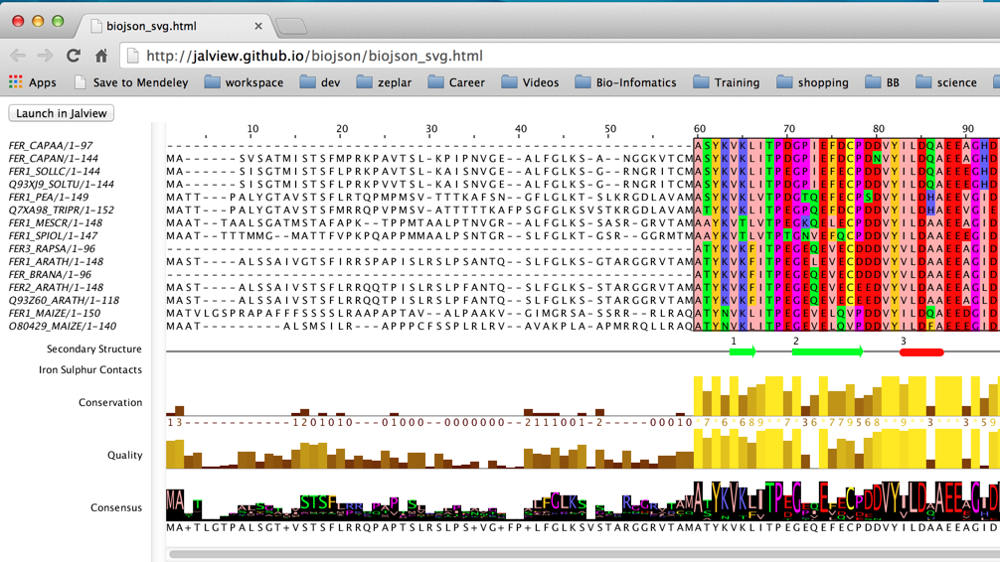

Welcome to BioJSON
BioJSON Version 1.0 is a JavaScript Object Notation (JSON) specification for the representation and exchange of single multiple sequence alignments (MSAs) with their annotations, features, groups, hidden sequences, hidden columns and colour schemes. It also allows custom application settings to be encoded for the Jalview (www.jalview.org) multiple alignment workbench.
Future versions of BioJSON will provide more complete support for the interchange of multiple alignment data and associated metadata. It will also introduce new representations for phylogenetic data and three-dimensional structures.
Although Version 1.0 is specific to multiple sequence alignments, we think BioJSON could be extended to allow mobile, web-based and standalone bioinformatics applications of many types to easily exchange data and three-dimensional structures.
The first version of the specification was developed in 2015 and implemented in Jalview 2.9.
Get involved
If you have any comments about the current BioJSON or want to contribute to the development of BioJSON then please file an issue.
Why use BioJSON
JSON is generally useful as a lightweight data exchange format and is now often used in preference to more verbose solutions such as XML. BioJSON has been built on JSON to extend the data exchange options possible with current multiple alignment file formats and to allow straightforward additions to the exchange medium that can accommodate annotations and other metadata as well as application-specific settings or parameters.
If you are presenting multiple alignment-based data on the web, then BioJSON V 1.0 provides a method to describe the alignment and its annotations. BioJSON V 1.0 also allows the straightforward import/export of these data to/from the Jalview desktop application
Future versions of BioJSON will provide more complete support for the interchange of multiple alignment data. It will also introduce new representations for phylogenetic data and 3D structures.
BioJSON v1 UML Diagram

Some UML notations and their meanings
- 0..1 → zero or one
- 0..* → zero or many
- 1..1 → one to one
- 1..* → one or many
The BioJSON Schema
BioJSON is specified using version 4 of the jsonschema standard. The schema is available via the github repository or can be downloaded from here. You can explore the BioJSON schema with the interactive visualisation created with Docson.
Instructions for interacting with the Docson schema
Sample BioJSON flat-file
Download a Sample BioJSON or view it here.
Sample HTML embedded with BioJSON
The image below is a screenshot of a Jalview multiple sequence alignment rendered with SVG and exported as a HTML file embedded with BioJSON.
Click here or the screenshot to view the live example. You can import the embedded BioJSON to Jalview by clicking the “Launch in Jalview” button on the example page.
See BioJSON in Action!
The current application of BioJSON in Jalview 2.9 includes:- Export and import of BioJSON data as JSON flat files
- Export and import of supporting data for interactive web pages, including:
- Interactive SVG figures (File → Export Image → HTML)
- The BioJS MSA viewer (File → Export Image → BioJS)
Future Applications
Some of the future applications of BioJSON include:- Underlying data format for Jalview web-services
- Representation of linked cDNA and Protein alignments views
- Data exchange format for Javascript version of Jalview (JalviewJS)